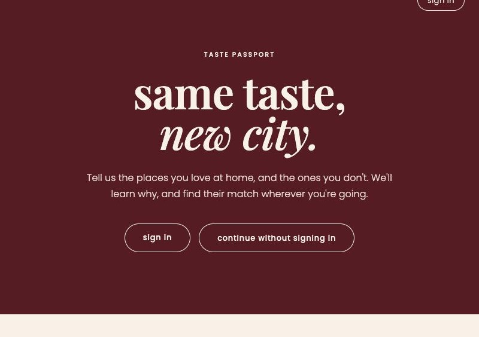
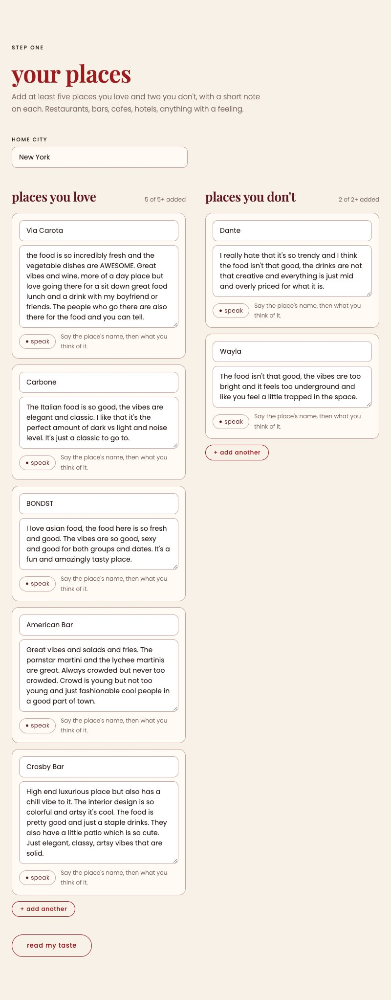
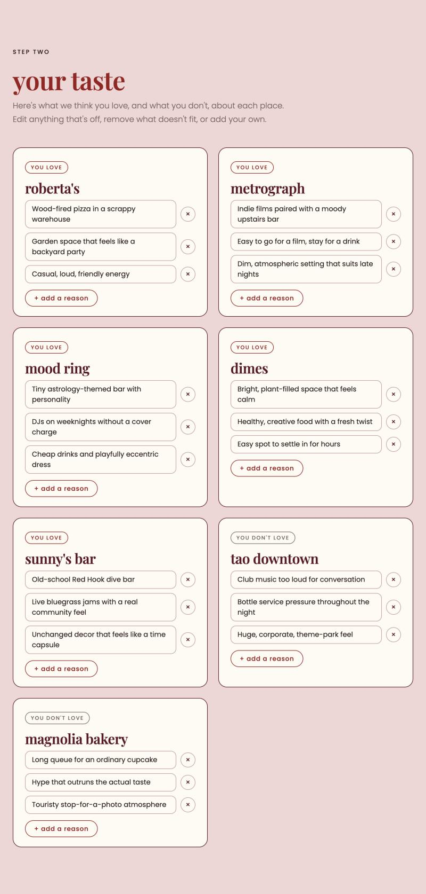
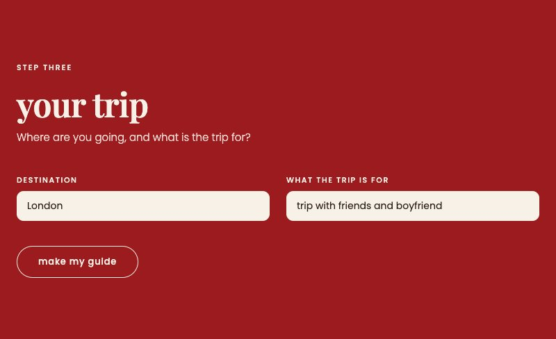
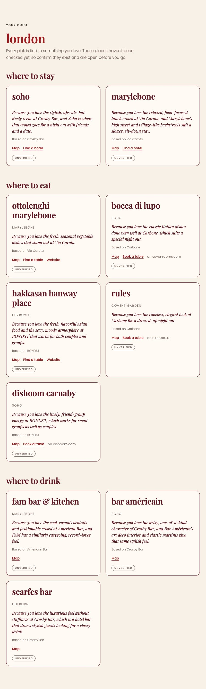

NYU Stern · Building with AI · Fall 2026
Same taste, new city.
Taste Passport turns the places you love at home into a travel profile. It learns what you love and dislike about each place and uses that to recommend where to stay, eat, drink, shop and explore in a new city. Traveling with others? Friends can add their own taste through a link, and the guide adapts to everyone on the trip.
Planning where to eat, drink and stay in a new city takes hours and still feels like guesswork. Recommendations are scattered across Google, TikTok, Instagram, blogs and friends' texts, and almost all of them are generic. They tell you what's popular, not what you would like.
Most people already know their taste well. They have go-to spots at home and could explain what they love about each one. But nothing carries that knowledge to a new city, so every trip starts from zero. On top of that, traveling with others makes it harder. Everyone has different tastes, budgets and dealbreakers, and the planning usually falls on one person in a long group chat.
My primary user is me, an NYC-based MBA student who travels often and has strong opinions about where I eat, drink and stay.
I'll test with a group of 5 to 10 people I can easily reach throughout my build, including Stern MBA classmates and college friends. The group spans different age ranges and travel styles, so I can see whether the taste matching works beyond people like me.
It takes hours, the results are generic, and at least one meal usually ends up at a tourist trap or an overhyped spot.
It takes minutes, and every pick feels like it could be one of my own go-to spots.
| Not building | Why |
|---|---|
| Shared group accounts | There won't be a shared trip that everyone logs into, with members, permissions and a group profile. Only the person planning the trip has an account. Friends join through a share link and add their favorites and dislikes without signing up. A full group account system would add a lot of work and slow friends down, without making the picks any better. |
| Map view | Showing every pick on one map would be nice, but each pick already links to Google Maps, and a map isn't needed to test whether the taste matching works. |
| Importing likes from Beli or Google Maps | Pulling in places people already saved in apps like Beli or Google Maps would mean less typing, but voice input already makes entering places quick, and the notes on why you love each place are what make the picks personal. |
Each tester tries two cities they know well, so they can judge the picks. I'll consider it working if at least 7 out of 10 picks are places they'd actually go.
I'll also check whether the app understands why people love their places. Most of the reasons it pulls out should be kept without edits, and testers should feel the explanations sound like them.
Riskiest assumption. A short note about a favorite place gives the app enough to understand why someone loves it, in a way that carries over to a different city. The first version is designed to test exactly that.
Biggest risk: the app understands my taste at home but can't carry it to a new city. If two very different people get similar guides, or the picks are generic, popular or touristy instead of personal, the product doesn't work.
How this build tests it: I created three test personas who live in New York and have clearly different taste, each with 5 favorites and 2 dislikes with notes: Mara (alternative and artsy), Brooke (mainstream and trendy) and Sam (a budget foodie). Their tastes clash on purpose. Brooke dislikes two of Mara's favorites, and Sam dislikes two of Brooke's. A script sends all three through the real app for London and Istanbul, the two cities I know best, so I can judge every pick. I ran it after every change and compared the results side by side. Beyond the personas, my pod already tested the Build 1 prototype in class last week (November 10) and suggested two of this build's features (voice input and booking links), and this week my friend Danielle tried it with her own New York favorites for a trip to London. Against my target of 7 out of 10 picks a tester would actually go to, Danielle rated her London guide 8 out of 10. My friend Selin tried an earlier version for Istanbul and rated it 5.5 out of 10, below the target, which matches what I saw with the personas: Istanbul is harder. The first row is where Build 1 left off; every row after it is a version I made during Build 2.
| Version | What changed | What happened |
|---|---|---|
| Build 1 (starting point) | Every pick tied to one favorite | The three guides were clearly different, so the app does tell people apart. But some guides were too short, some links were forced, and Istanbul picks clustered in one area. |
| Build 2 · v1–v2 | The AI first writes a general taste summary and picks from that, plus rules like "central" and "not touristy" | Worse. Summaries like "polished, buzzy" fit too many places, so Brooke's and Mara's Istanbul guides started to look alike. The AI also added things to Brooke's avoid list that she never said ("sceney"), which is the opposite of her taste. |
| Build 2 · v3–v4 | Back to matching specific places, plus the crowd at each favorite and matching home neighborhoods to the destination | Better and easier to debug. It showed that the AI's own map of Istanbul is missing areas like Bebek and Etiler, so no prompt could fix Brooke's guide. |
| Build 2 · v5 | Web search added on top of the AI's own knowledge; compared Haiku and Sonnet with 1–3 searches | More current, specific and local picks (e.g. Carbone London and Chiltern Firehouse for Brooke). Haiku + 1 search gave my favorite results. |
| Build 2 · v6 (current) | Always 5 places to eat and 3 to drink, and the server checks that no neighborhood has more than 60% of the picks | Every guide came back full, and no persona's guide was crowded into one area. |
What I learned: taste carries over to a new city through specific places and the crowd that goes there, not through general adjectives. The notes do carry enough information, but only if the app keeps them concrete. The remaining gap is the AI's knowledge of each city, which web search partly fixes.
Tradeoffs I made along the way:
app/index.html) collects the home city, 5+ favorites and 2+ dislikes with a note on each, then the destination and what the trip is for.app/server.js), which asks the AI, through OpenRouter, what the person loves or dislikes about each place and who the crowd there is. My API key stays on the server and never reaches the browser.Build 3 took the app from my laptop to a real address that anyone can open on their phone.
| Choice | What I picked | Why |
|---|---|---|
| Hosting | Render, free web service | My app is a small Node server, which is what Render is for, so it needed almost no changes. Every push to GitHub deploys it automatically. The free plan falls asleep after 15 quiet minutes, so a free uptime monitor (UptimeRobot) visits it every 5 minutes to keep it awake for testers. |
| Sign-in | Optional, email + password (Supabase) | Optional so my pod and new testers can try it in seconds. Email + password instead of login links, because Supabase's free plan only sends a few emails an hour, which would break if a whole class signed up at once. |
| Database | Supabase (Postgres, free plan) | Two tables: saved places (one list per home city, with the taste reading) and trips (every guide). Row Level Security is on for both, so each person can only see and change their own rows, and visitors who aren't signed in get nothing. |
| Secrets | Kept on the server | My OpenRouter key lives only in Render's settings and never reaches the browser. The page only has keys that are meant to be public (Supabase's publishable key and PostHog's key). |
| Cost protection | Rate limits + spending cap | Each visitor gets 25 AI requests per 10 minutes, and the whole app 400 a day. The live app has its own OpenRouter key with a $5 cap and no auto top-up, so a surprise bill can't happen. |
Security audit: I tested that Account B can't read, change or delete Account A's data (12 out of 12 checks passed), that the AI routes start refusing after 25 calls, and that no secret keys are in the repo or the live page. An AI security review found 7 issues, and all of them are fixed. Full details are in SECURITY.md.
About $0.05 per user run (about $5 per 100 users) on the current setup, Claude Haiku 5.5 with one web search. One run is one person going from their places to a finished guide:
| Step | Cost |
|---|---|
| Voice input, if used (splitting what you say into name and note) | ~$0.001 |
| Taste reading | ~$0.001 |
| Guide (5 places to eat, 3 to drink, one web search) | ~$0.017 |
| Booking link searches (one per place to eat) | ~$0.028 |
| Total | ~$0.05 |
The booking links are more than half the cost, so they're the first place to save money later (e.g. remembering links for restaurants that come up often).
How I chose this setup: I ran the same three personas through six combinations of model and web search and compared the picks and the cost of the taste reading + guide:
| Setup | Cost per run | 100 users | Picks |
|---|---|---|---|
| Claude Haiku 5.5, no search | ~$0.002 | ~$0.20 | Generic, more tourist spots |
| Claude Haiku 5.5 + 1 web search (current) | ~$0.015–0.019 | ~$1.70 | Best value, my preferred results |
| Claude Haiku 5.5 + 2 web searches | ~$0.03 | ~$3 | Not clearly better than 1 search |
| Claude Sonnet 5.5, no search | ~$0.03–0.04 | ~$3.50 | More specific than Haiku |
| Claude Sonnet 5.5 + 1 web search | ~$0.11 | ~$11 | Slightly better in some cities (Istanbul), about 7 times the cost |
| Claude Sonnet 5.5 + 3 web searches | ~$0.18–0.35 | ~$27 | Good, but too expensive |
Haiku + 1 web search gave the picks I liked most for a fraction of the cost, so it's the default. Sonnet + 1 search stays as an option if picks need to improve later, and switching is one setting.
Status: Build 3, live at taste-passport-7jya.onrender.com. Runs on Render with Claude Haiku 5.5 and one web search through OpenRouter, optional sign-in and saved data on Supabase, and PostHog analytics.
The core workflow works end to end: add 5+ favorite and 2+ disliked places with a note on each (typed or spoken), review and edit what the AI thinks I love or dislike about each one and who the crowd is, enter a destination and trip purpose, and get a guide with 1–2 neighborhoods, 5 places to eat and 3 places to drink. Every pick is tied to a specific favorite and has map and booking links. Signed in, my places and taste are saved for each home city and every guide is saved as a trip.
The screenshots below are a real run of the current version with Mara, one of my test personas (artsy, lives in Bushwick), and her New York favorites for a 4-day trip to London with a friend.





Build on at least two separate days each week outside class, including the November 3 break. Push commits and log actual progress, failures, PRD changes, costs, and hours here. All build deadlines are noon, New York time.